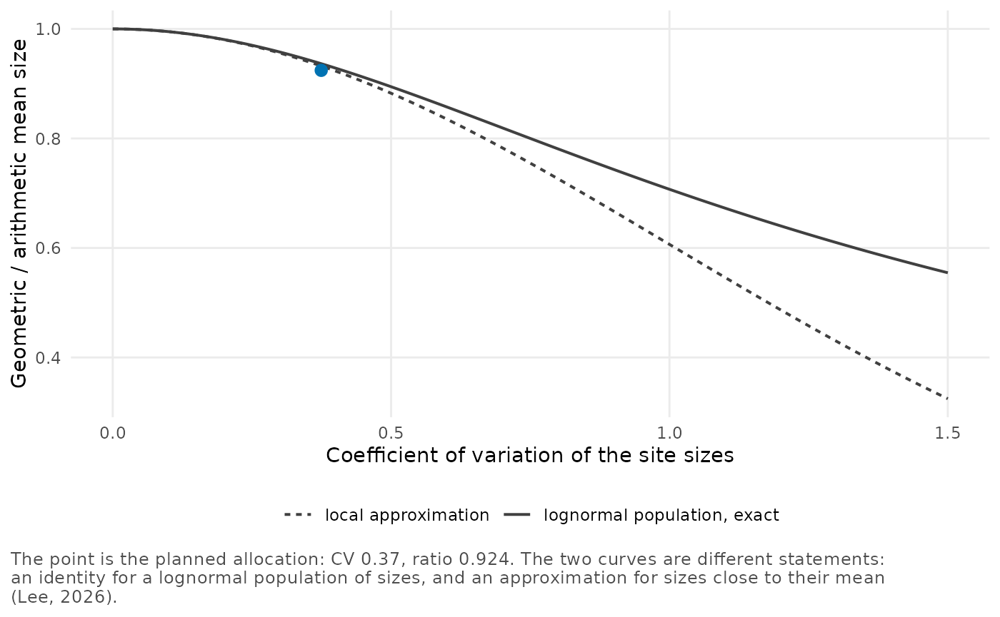
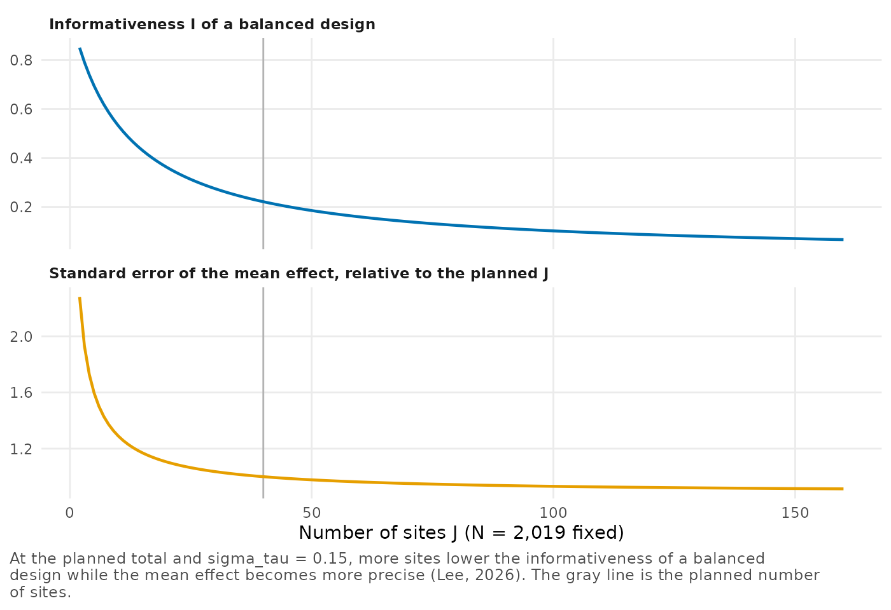

Before a multisite trial collects any data, its design already determines, approximately, the sampling variances of the site estimates. They follow from the number of individuals in each site and the proportion assigned to treatment, together with planning values of the outcome variance and of the proportion of it that covariates explain. With a planning value of the between-site standard deviation as well, we can compute the reliability profile that the trial would have. In this vignette we compute it for a planned trial of 40 schools. We then use it to compare ways of dividing the students among the schools, numbers of schools, and ways of spending a budget when some schools cost more per student than others.
We measure effects in standard deviations of the outcome, as many
power calculations do, so the outcome variance is 1, the default of the
argument var_outcome in the functions below.
Sampling variances from site sizes
Take a difference in means between the two arms of site , with a proportion of its individuals in treatment and covariates that explain a proportion of the within-arm outcome variance . A common planning approximation of its sampling variance is (Lee 2026)
We compute it with neyman_variance() for sites of 20, 50
and 100 students with half of each site in treatment, first without
covariates and then with covariates that explain 40% of the outcome
variance.
v0 <- neyman_variance(c(20, 50, 100), p = 0.5)
v0
#> [1] 0.20 0.08 0.04
v1 <- neyman_variance(c(20, 50, 100), p = 0.5, R2 = 0.4)
v1
#> [1] 0.120 0.048 0.024Without covariates every site has
,
so
,
and a site of 100 students has a fifth of the variance of a site of 20.
Covariates that explain 40% of the outcome variance lower every variance
by 40%, to
.
Designs with blocks, clusters within sites or other estimators need
their own variance formula. For them, the planning functions below also
take the constants
directly, through the argument kappa, so you can supply
them from that formula.
The profile of a planned allocation
Suppose a trial plans to recruit about 2,000 students in 40 schools whose sizes differ. As an example plan, we draw the 40 sizes from a lognormal distribution with mean 50 and coefficient of variation 0.5, and round them to whole students.
set.seed(1)
cv <- 0.5
var_log <- log(1 + cv^2)
n <- round(rlnorm(40, meanlog = log(50) - var_log / 2, sdlog = sqrt(var_log)))
c(total = sum(n), smallest = min(n), largest = max(n))
#> total smallest largest
#> 2019 16 95The 40 sizes add up to 2,019 students, from 16 to 95 per school. Their coefficient of variation, computed with divisor , is 0.37, below the 0.5 of the distribution that we drew them from.
We pass the planned sizes to reliability_design(), with
the
of the previous section for half of each school in treatment and no
covariates, and with three planning values of
.
It compares them with a balanced allocation. Here balance refers to the
site sizes, made equal with the same total and the same number of sites,
and within each site both allocations put half of the students in
treatment. Planning values of
can come from the variation of effects across sites in earlier multisite
trials of similar programs (Weiss et al. 2017), and Raudenbush and Bloom (2015) describe how such trials
estimate it. Printing the design shows the comparison at the first
planning value.
design <- reliability_design(n, sigma_tau = c(0.15, 0.2, 0.25), kappa = 4)
design
#> Planned allocation: 40 sites, 2,019 individuals, kappa = 4, sigma_tau = 0.15
#> Site sizes from 16 to 95 (CV 0.37)
#>
#> planned balanced
#> informativeness I 0.208 0.221
#> mean reliability 0.216 0.221
#> dispersion H 0.0135 0.0000
#> concentration count J_eff 36.8 40.0
#> geometric mean size 46.7 50.5
#>
#> Balance maximizes I and the mean reliability at fixed J and N when every site
#> has the same kappa and the same cost per individual (Lee, 2026).At the planned sizes give an informativeness of 0.208, against 0.221 for equal sizes, and a mean reliability of 0.216 against 0.221. Unequal sizes also make the reliabilities unequal, so the planned allocation has a dispersion of 0.0135 and a concentration count of 36.8, where equal sizes give 0 and 40.
Only the geometric mean of the sizes enters the informativeness, because the geometric mean of the sampling variances is . So
Here , while the average size is 50.5. For a fixed number of sites and a fixed total, equal sizes make as large as possible, so they maximize the informativeness, and they maximize the mean reliability too (Lee 2026, Proposition 4).
Since
,
the planned sizes have a logit of
lower by
at every planning value, and so an
lower by about
times as much, which is largest near
.
For each planning value, the component scenarios of the
design has the informativeness of both allocations.
design$scenarios
#> sigma_tau I_planned I_balanced
#> 1 0.15 0.2078796 0.2211364
#> 2 0.20 0.3181275 0.3354378
#> 3 0.25 0.4216257 0.4409260Relative to equal sizes, the plan loses 0.013 of informativeness at and 0.019 at 0.25, where is closer to 1/2.
Unequal site sizes
The ratio of the geometric to the arithmetic mean of the sizes,
design$efficiency, is 0.924 for this plan. For sizes close
to their mean it is about
,
with the coefficient of variation computed with divisor
.
For a lognormal population of sizes the ratio is
,
a statement about the population rather than about any finite set of
sizes (Lee 2026,
Appendix E.2). imbalance_ratio() gives both, and we
compare them at three coefficients of variation.
cvs <- c(0.25, 0.5, 0.75)
round(rbind(lognormal = imbalance_ratio(cvs),
local = imbalance_ratio(cvs, type = "local")), 3)
#> [,1] [,2] [,3]
#> lognormal 0.970 0.894 0.800
#> local 0.969 0.882 0.755At a coefficient of variation of 0.25 the two differ by less than
0.001, and at 0.75 the population ratio is 0.800 against 0.755 for the
approximation. We plot both curves with plot_design(),
which marks the planned allocation.
plot_design(design, type = "imbalance")
As the sizes spread out, the curves diverge, the local approximation falling faster. The planned point, at a coefficient of variation of 0.37, lies a little below both, with a ratio of 0.924 against 0.932 on the local curve and 0.936 on the lognormal one. A finite set of sizes has a ratio that depends on more than their coefficient of variation, so neither curve reproduces it (Lee 2026, Appendix E.2).
More sites or larger sites
With equal sizes and a fixed total
,
the informativeness is
,
which falls as the
individuals are spread over more sites. With
and the
known, the generalized least squares estimate of the mean effect has
variance
,
and that falls as well (Lee 2026, Appendix E.3). At a fixed
total, then, more sites lower the informativeness but make the mean
effect more precise. With type = "sites",
plot_design() plots the two against the number of sites,
one above the other, at the planned total and the first planning value
of
.
It divides the standard error of the mean effect by its value at the
planned 40 sites.
plot_design(design, type = "sites")
Halving the number of schools to 20, with the same 2,019 students, would raise from 0.22 to 0.36 and the standard error of the mean effect by 11%. Doubling it to 80 would lower to 0.12 and the standard error by 6%.
We can also start from a target informativeness.
solve_design() turns a target into a design with equal site
sizes. With a given total it finds the largest number of sites that
reaches the target, and with a given number of sites the size per site
that the target needs. We use 1/2 as an example target. At
the between-site variance equals the geometric mean of the sampling
variances, so a site with that sampling variance keeps half of its own
estimate in its posterior mean. It is also where the leading term of the
gap between the mean reliability and
changes sign. First we fix the total at 2,000 students.
by_total <- solve_design(target_I = 0.5, sigma_tau = c(0.15, 0.2, 0.25),
kappa = 4, N = 2000)
by_total
#> target_I sigma_tau kappa J n_per_site N I
#> 1 0.5 0.15 4 11 181.81818 2000 0.505618
#> 2 0.5 0.20 4 20 100.00000 2000 0.500000
#> 3 0.5 0.25 4 31 64.51613 2000 0.502008With 2,000 students the target allows 20 schools of 100 students at
,
but only 11 schools if
is 0.15, and 31 if it is 0.25. Its column I gives the
informativeness reached with the number of sites rounded down, at or a
little above the target. Next we keep the plan’s 40 schools and ask for
the size per site at
.
by_sites <- solve_design(target_I = 0.5, sigma_tau = 0.2, kappa = 4, J = 40)
by_sites
#> target_I sigma_tau kappa J n_per_site N
#> 1 0.5 0.2 4 40 100 4000Each school would need 100 students, 4,000 in all, about twice the planned total. Because is unknown when a trial is planned, we would give such answers for each planning value rather than as one number. Which target suits a trial depends on its purpose. A trial run to estimate the mean effect is planned for the standard error of that estimate, as in the plot above. One run to estimate or rank the site effects would plan for the informativeness as well.
Sizes under a budget
When recruiting costs more in some schools than in others, the
informativeness for a given budget
is largest in a continuous allocation when every school gets the same
spending (Lee 2026,
Appendix E.3). With costs
per student, that means
.
balanced_allocation(integer = FALSE) computes this
allocation, with optional bounds on the sizes. The default integer
allocation is optimal with equal costs; with unequal costs it uses a
greedy rounding rule that need not find the integer optimum and may
leave some budget unused. In our example half of the 40 schools cost
twice as much per student, and the budget is 3,000.
cost <- rep(c(1, 2), each = 20)
sizes <- balanced_allocation(40, cost = cost, budget = 3000)
table(sizes, cost)
#> cost
#> sizes 1 2
#> 37 0 10
#> 38 0 10
#> 75 20 0Each of the cheaper schools gets 75 students and each of the others
37 or 38, so the spending per school is the same up to the rounding to
whole students. In all, the budget pays for 2,250 students. To see what
equal spending gains, we compare it with 50 students in every school,
which costs the same 3,000. Given cost,
reliability_design() compares the planned sizes with equal
spending of the same budget instead of with equal sizes.
equal <- rep(50, 40)
reliability_design(equal, sigma_tau = 0.15, kappa = 4, cost = cost)
#> Planned allocation: 40 sites, 2,000 individuals, kappa = 4, sigma_tau = 0.15
#> Site sizes from 50 to 50 (CV 0.00)
#>
#> planned equal spending
#> informativeness I 0.220 0.230
#> mean reliability 0.220 0.235
#> dispersion H 0.0000 0.0106
#> concentration count J_eff 40.0 37.5
#> geometric mean size 50.0 53.0
#>
#> With costs per individual that differ, equal spending maximizes I for the same
#> budget (Lee, 2026).Equal spending raises the informativeness from 0.220 to 0.230 and the mean reliability from 0.220 to 0.235, and the same budget pays for 2,250 students instead of 2,000. Its reliabilities are no longer equal, so its dispersion is 0.0106 and its concentration count 37.5.
Writing down the plan
For a protocol or a proposal, report_text() writes the
comparison as sentences. We ask for three decimals, because with the
default two the planned and balanced mean reliabilities, 0.216 and
0.221, would print as the same number.
plan <- report_text(design, outcome = "the test score", digits = 3)
writeLines(strwrap(plan))
#> For the test score, the planned allocation of 2,019 individuals across
#> 40 sites would have an informativeness of 0.208 at a between-site
#> standard deviation of 0.15, against 0.221 for a balanced allocation of
#> the same total.
#> The mean reliability would be 0.216 (0.221 balanced), and the
#> concentration count 36.8 (at most 40, the number of sites).
#> At a fixed number of sites and total, balance maximizes the
#> informativeness and the mean reliability when every site has the same
#> variance constant and the same cost per individual.
#> These values are computed at the planning values of the between-site
#> standard deviation and the sampling variances.Like the printed design, the sentences use the first planning value.
A plan would add the other two from design$scenarios, where
at
and 0.25 the planned sizes give an informativeness of 0.318 and 0.422,
and equal sizes 0.335 and 0.441.
Planning your own trial
For your own trial, you give reliability_design()
- the planned site sizes, or sizes drawn from a plausible distribution, as above, when they are not yet known;
-
p,R2andvar_outcomefor the variance formula above, or constantskappafrom a formula that suits your design; - a few planning values of
sigma_tau, in the units of your effects; - the costs per individual,
cost, if they differ between sites.
With type = "target", plot_design() plots
the informativeness of equal site sizes against the size per site for
each of your planning values, which shows how the size needed for a
target moves with
.
Once the trial has run, reliability_posterior() gives the
posterior of the same diagnostics from the site estimates, as
vignette("poolinfo") shows.